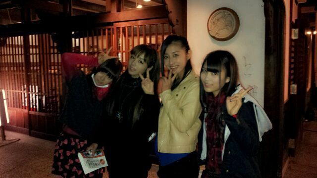

はろー
ろってぃだよ=・ω・=
明日はぁ〜
名古屋の
マンモスフリーマーケット★に
参加しますえぇぇ( *´ ▽ ` )ノ
是非是非っ)))
乃木坂46のステージをね
見て帰ってくれたら
嬉しいお気持ちってやつぅ〜
(〃ω〃)
よろしくお願いします♪
あっ、)))
underの新曲
明日 初披露です*^^*
さらっ。って
ゆってもーたけど
まだ誰も聞いたことないよねっ
((( ´▽`)?♪
楽しみにしていてくれたら
また嬉しい気持ちです(〃Д〃)
まひろも楽しみだからさっ♪/
ステージがちょっと
狭めらしいから
フォーメーション
頑張るぜい〜(*^^*)
今日、皆で練習したんだぉ。
あっ、話変わるけど、
子供の頃,
お友達のお家に遊びに行く時さぁ、
「おじゃましまぁ〜す♪」
ってゆうの必ず
「おじゃましマンモス
ぱおんぱぉ〜ん♪」って
ゆっておじゃましとってんけど、
これって まひろだけぇ?
えっ、 ゆうたよなあ(・ω・；...
懐かしい(・ω・)
幼稚園の時とかさっ★
ってな感じでっ,
名古屋で待ってるからよん♪
ってな感じで,
ってな感じでよう
使ってまうわ。アチャー
皆様 ヽ( 〃´Д`〃) ノ
おやすみなさい ‥ ‥。

ひめか まひろ ちはる ひな
のし。